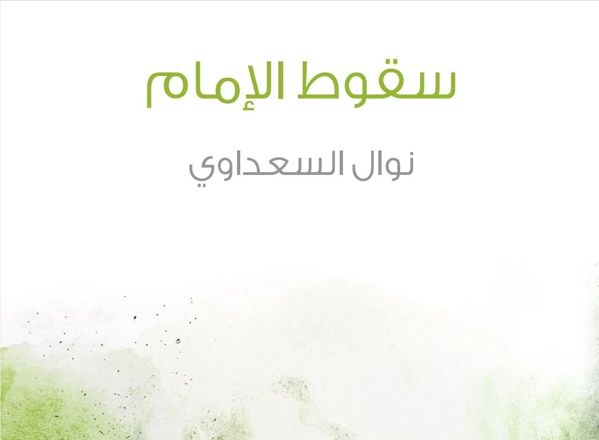

Nawal Saadawi's The Fall of the Imam (1987)
It was 2001, during my second year in college, when I first read Nawal Saadawi's The Fall of the Imam (1987), and I was shocked to open the novel and find the words "bint" and "Allah" (daughter, God) juxtaposed, then follow a protagonist who believes she is God's daughter flee from evil forces. Almost two decades later, reading the novel again, I still find that opening chapter radical. Its unorthodox premise evaded scrutiny for decades, but Al-Azhar banned the book in 2004. After that, you could only find editions from Beirut-based publisher Al-Saqi.
It was Saadawi's sixth novel, and, despite its quasi-mythical setting in an imaginary Arabic-speaking Muslim-majority nation and its highly allegorical language, it very much reflected the politics of its time. The debt crisis of the late 1980s, the Chernobyl Nuclear Catastrophe of 1986 and the Islamic finance debacle (specifically Ahmed al-Rayan's notorious Ponzi scheme) leave traces in the strikingly metaphorical prose with its elliptical style.
Maybe someone who is continually subverting authority and the language of power is not someone interested in literary style or the craft of writing. Indeed, she doesn't seem interested in either. Her prose is jumpy and feverish, her narrative uneven, and, at times, The Fall of the Imam lacks any cohesion at all. I find it can be better be understood as cinematically constructed agitprop with an extraordinary conceptual framework and a story that can be understood visually more than anything else — as reflected in the three scenes I have written to frame this response.
The novel pivots around three main scenes, two murders and a judgement, that are repeatedly re-enacted for about 160 pages, each time revealing a different aspect, in the mode of Akira Kurosawa's celebrated 1950 film Rashomon, where a single scene is told five times by a different narrator, each adapting the story to their own perspective and slightly changing it, creating a mesmerizing kaleidoscope of the same story's truths and visual possibilities. Saadawi uses the technique to create a hypnotic effect that reflects the inexhaustible potentialities of her theme.
In an extraordinary literary tactic, Saadawi transmutes the assassination of late president Anwar Sadat — with whom the titular imam shares attributes such as shaved head, the nickname "leader of the faithful," a foreign wife — as symbolic patricide that is continually reenacted like his murder of the protagonist, the impossibly conceived Bint Allah, so called after the son of God. Unsurprisingly, everyone wants Saadawi's "female divine" murdered for the very thought that she exists.
The narrative has a Manichean bent: the imam is both God and Satan. A national leader and a mythical figure, he consolidates political power through war and propaganda and hijacks religious power by allying with a group of religious fanatics. He is the benevolent hero of war and peace (a stab, no doubt, at Sadat and his 1973 war) and the celebrated guardian of faith, and, at the same, a diabolical tyrant who imprisons, tortures and wreaks havoc in the name of faith and victory. This duality is the novel's weakest aspect and the reason why some of the criticism directed at Saadawi merits consideration. She takes the real-life moral hypocrisy of Islamists and Sadat to its logical extreme: God is reduced to an angry patriarch, and the Imam and his entourage are hedonistic alcoholics who amass fortunes through corruption, marry multiple wives and use women as sexual currency, in the mode of king Shahryār of Arabian Nights (a reference Saadawi uses throughout). This image of God as a destructive women-punishing force lacks nuance and only plays into the Islamists' materialist and literalist notions of the divine. It becomes a shallow parody, a caricature that carries some truth but leaves a lot of questions. We never get to understand why the Islamists' god is so one-dimensional and misogynistic. We keenly feel the systematic, nonsensical attacks on women, but the lengthy paraphrasing from Islamist discourse serves mainly to dramatize the internal dissonance of their rhetoric and the implicit violence and irrationality of its extremist tendencies rather than to engage or critique.
While some may worry that the book could feed the Islamophobia that is currently rampant, Saadawi wrote it at the height of the neoliberal Islamist threat in Egypt, and the book criticizes a particular understanding of Islam by warning of the perils of enforcing it on society as a whole. I believe it is necessary to critique radical versions of Islam, if we are to stay true to the religion and to critical thinking, justice, liberty and freedom.
Colorful blasphemy is Saadawi's hallmark, and one that is specifically designed to offend both Muslims and Christians. She uses psychoanalytic concepts and religious symbolism to frame her abstract-mythical narrative, constructing two parallel triads — God/imam/homeland (all masculine, powerful, triumphant) versus mother/daughter/wife (all subservient, weak, oppressed) — that are constantly played against each other. Seeing that the only way for her patriarchal triad to survive is by subduing and eventually annihilating the feminine, the novel is nothing more than an investigation of the possibility of feminine apotheosis in the face of a hostile, murderous patriarchy. Although her concern is not strictly theological, and she has repeatedly stated in interviews that she has no interest in affiliation with organized religion, this is an elaborate account of an immaculately conceived girl whose birth is both sacred and sacrilegious, divine and illegitimate. She transforms from wife to sister to daughter to lover, destabilizing not only our expectations of what she is and what she does, but also stirring our deepest fears of inbreeding, incest and blasphemy.
The triads exist and exercise power through multiple binaries: house of pleasure/house of worship, hospital/war trench, school/prison. State bureaucracy and social institutions function in this matrix of power to continuously find ways to subjugate women (and men — Saadawi doesn't shy away from pointing out that man are also victims of patriarchy) to fit into an engineered, corrupt social order. These binaries become loci for Saadawi's symbolic character study to unravel, and, using the Arabian Nights structure, her characters undergo constant metamorphosis in the same way the story does: "the beginning dissolves in the ending, like the day dissolves in the night."
Despite the fact that The Fall of the Imam primarily aimed at critiquing Sadat's neoliberal, patriarchal dystopia, Saadawi's imagining of the possibility of a female divine is a radical feminist achievement.